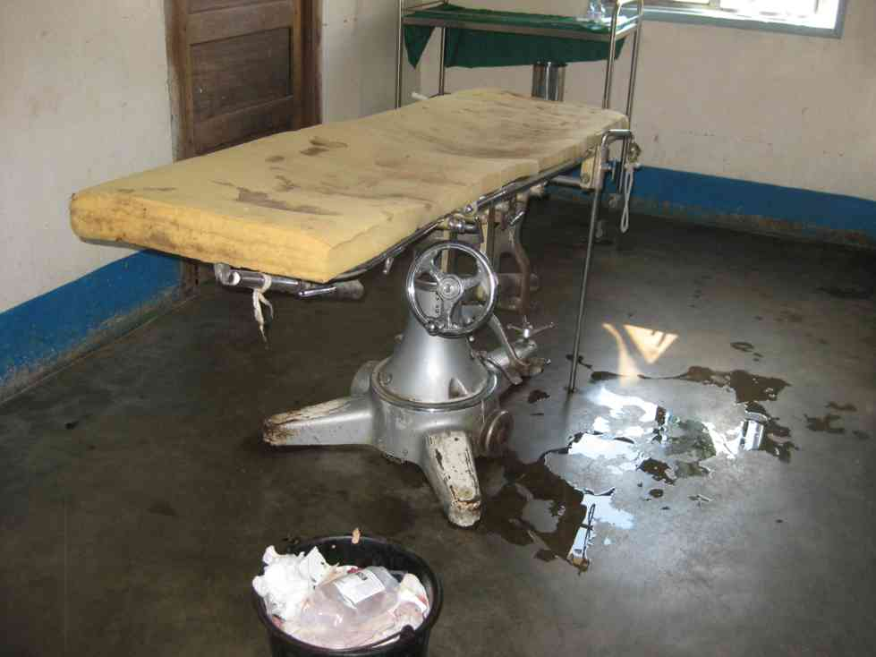
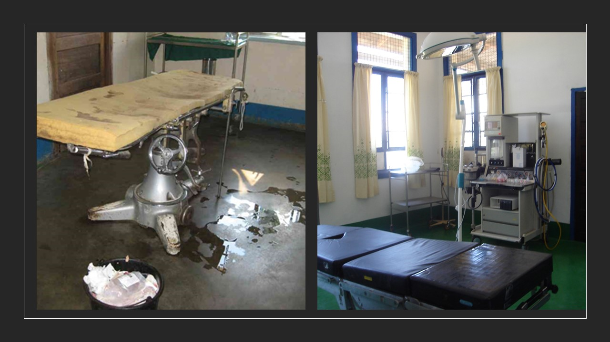
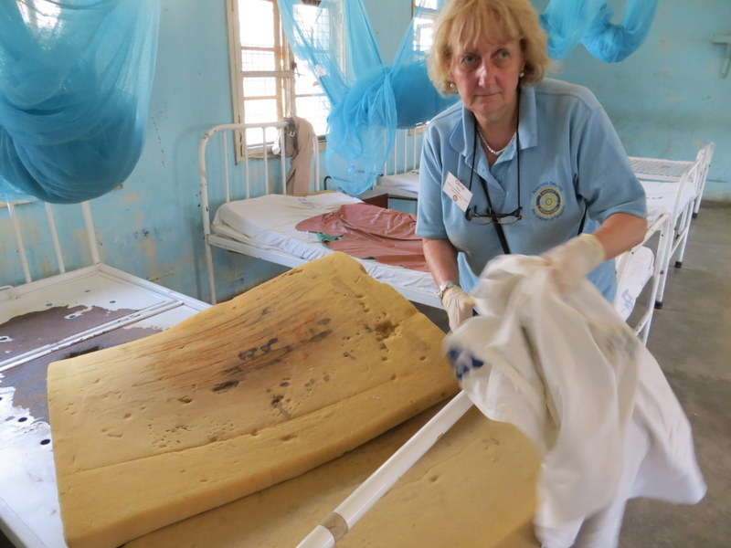
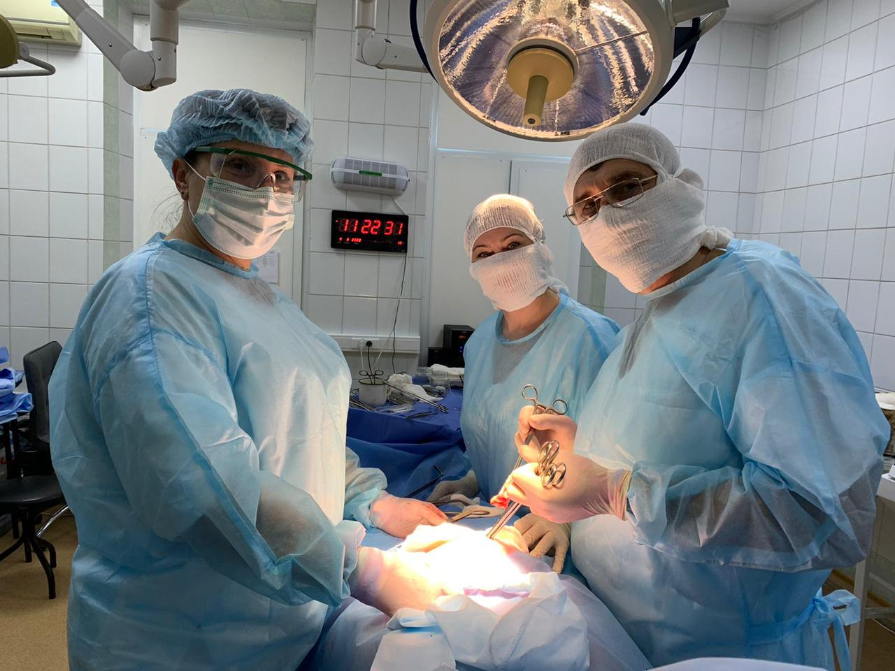
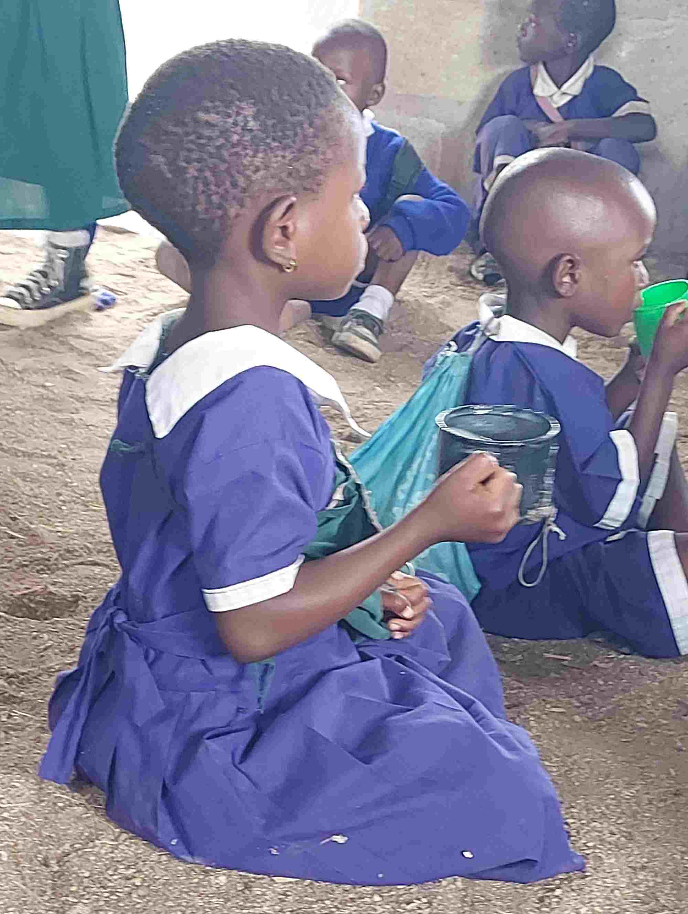

Home / Service projects





The Fellowship members have been supporting the people of Ukerewe since 2008.
Ukerewe is the largest inhabited island in Lake Victoria accessed by a 3.5-hour ferry trip from the mainland town of Mwanza.
The dire state of the only hospital on the island prompted Chair Dr John Philip into a multi-year project to improve care.
John and his wife Chris have led many teams of volunteers to the island and have renovated different parts of the hospital, updated facilities there, improved school amenities and have provided the community with substantial support.
Five years ago, supported by a Global Grant, a public awareness campaign was launched to demystify the myths about Albinism which made their lives safer.
The pandemic has made this poor community poorer.
Many schools are without basic amenities, overcrowded, and have no water or sanitation facilities. Pupils walk long distances to schools, many with no food or drink.
A farming project in 13 schools is now helping to provide breakfast three times a week for almost 10,000 pupils.
In order to highlight the importance of sustainability and environmental protection, as part of this project, more than 50,000 fruit and timber trees have been planted on the island.
Chris says: ‘We’ve funded cooking shelters and introduced safe and fuel-efficient stoves in four schools and dug shallow wells in 3 schools.
‘We are also trying to help many schools to have desks for their young pupils to sit at. One bench and desk unit can seat 3 children and can be made locally for a cost of £20 per unit.
‘We’ve so far supplied over 1,200 desks; each desk has an imprint of Rotary logo.’
Seeing is Believing - Click here
Each donations matter, even the smallest ones. Donate $2( average price of coffee in the USA) and someone’s life will get better!